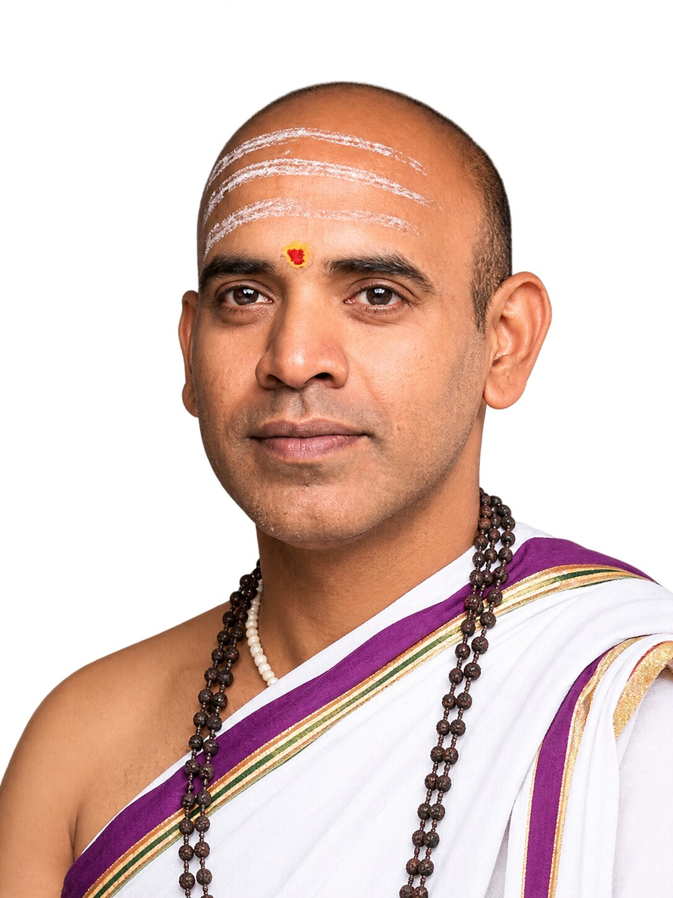

Kundli (janam patrika) reading
A full reading of your birth chart: nature, strengths, career, finances, health and the dasha periods ahead.
Kundli readings, marriage matching and muhurat from Maheshdatta Joshi, who also conducts your griha pravesh, vivah and other pujas.
Prefer to talk? Call +91 99305 26062
Every reading starts from your own birth chart. You get a clear explanation of what the planets indicate and what you can do about it.
Ask about your kundliA full reading of your birth chart: nature, strengths, career, finances, health and the dasha periods ahead.
Guna milan, manglik dosha and overall compatibility, checked before two families commit to a match.
Auspicious dates and timings for weddings, griha pravesh, business openings, vehicle purchase and travel.
What the current planetary periods and transits mean for the year ahead, and how to prepare for them.
Guidance on kaal sarp, manglik, pitra dosha and similar doshas, with practical remedies such as mantra and puja.
A starting letter and name suggestions based on your child’s birth nakshatra.
Maheshdatta Joshi conducts ceremonies at your home, hall or temple in Dombivli and nearby areas. Rituals are explained as they happen, so the whole family can take part.
Book a pandit on WhatsAppGanesh puja, vastu puja and the entry ceremony, timed to an auspicious muhurat.
Wedding rituals from sagai and haldi to kanyadaan and saptapadi, conducted in Sanskrit with meaning shared in simple language.
The katha and puja for new beginnings, milestones and thanksgiving.
Samskaras for children, performed on the right date with the right rituals.
Foundation stone, shop and office opening pujas, with muhurat guidance.
Pujas for planetary balance, health and peace, chosen with your chart in mind.

Maheshdatta Joshi has completed his M.A in Yajurveda and has over 20 years of experience studying and practising Vedic astrology and Hindu rituals. With deep respect for ancient Vedic traditions and scriptures, he provides traditional guidance to individuals and families across Karnataka and Maharashtra, helping them understand the spiritual and cultural significance of Hindu practices.
Over the years, he has guided families through important life events, including weddings, Griha Pravesh (housewarming ceremonies), auspicious beginnings, and other significant occasions. He combines his knowledge of Vedic traditions with a thoughtful approach to help families understand rituals, choose auspicious occasions, and observe ceremonies in accordance with their customs and beliefs.
Maheshdatta Joshi offers consultations and performs Hindu religious ceremonies in Hindi, Marathi, English, and Sanskrit. Whether you are planning a wedding, moving into a new home, seeking guidance for an auspicious occasion, or wishing to learn more about Vedic astrology and Hindu rituals, he strives to make traditional knowledge accessible and meaningful. His services are rooted in tradition and are intended as spiritual guidance, not as a substitute for professional medical, legal, or financial advice.
Share your question and birth details. You will get a reply by email or WhatsApp.
Maheshdatta Joshi talks about Vedic astrology, festivals, rituals and the meaning behind them. Watch the episodes on YouTube.
See what families in Dombivli say about their consultations and ceremonies, or leave your own review.
Maheshdatta JoshiYour date of birth, exact time of birth and place of birth. If you do not know the exact time, share your best estimate and mention that it is approximate.
The muhurat is chosen from the panchang, considering the tithi, nakshatra, weekday and the family’s birth details. Send your preferred month and the owner’s birth details, and the priest will suggest suitable dates.
Yes. The priest travels to your home, hall or temple in Dombivli and nearby areas, and brings the samagri if you ask for it.
Book as soon as the wedding date is fixed, and at least a few weeks ahead for peak wedding season, so the muhurat and rituals can be planned with both families.
Yes. Consultations are available in person, by phone and by video call. Send your question through the form to get started.